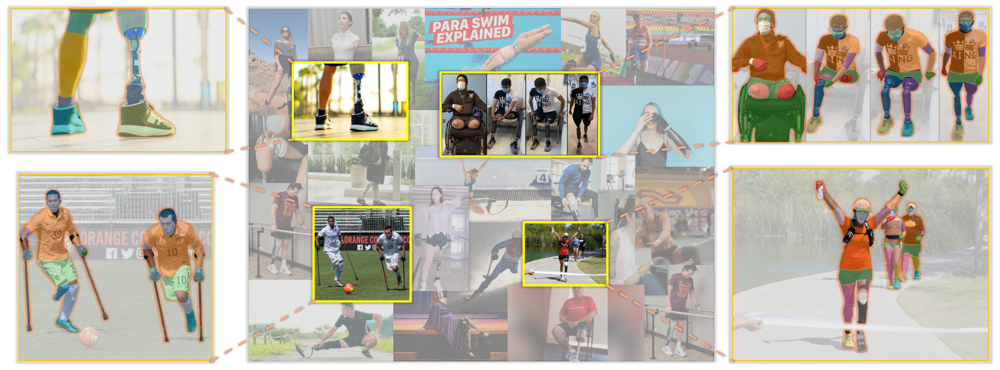
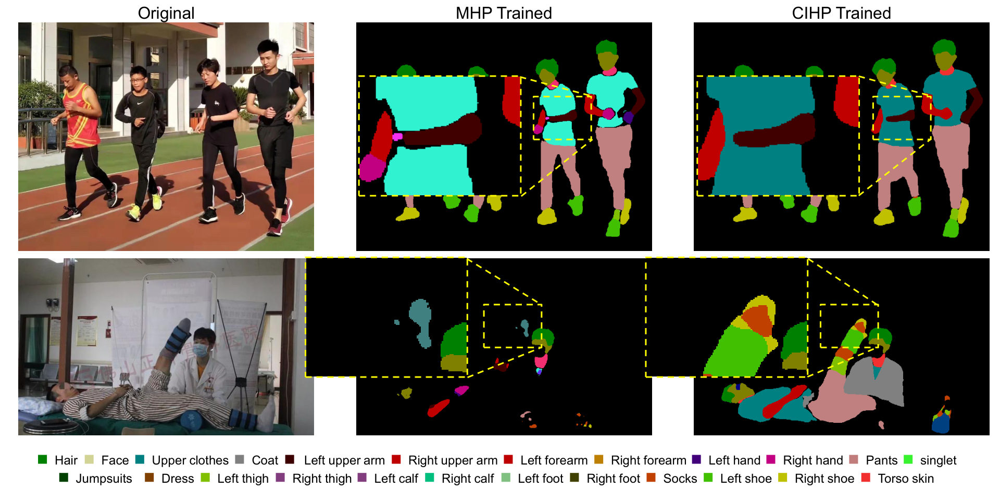
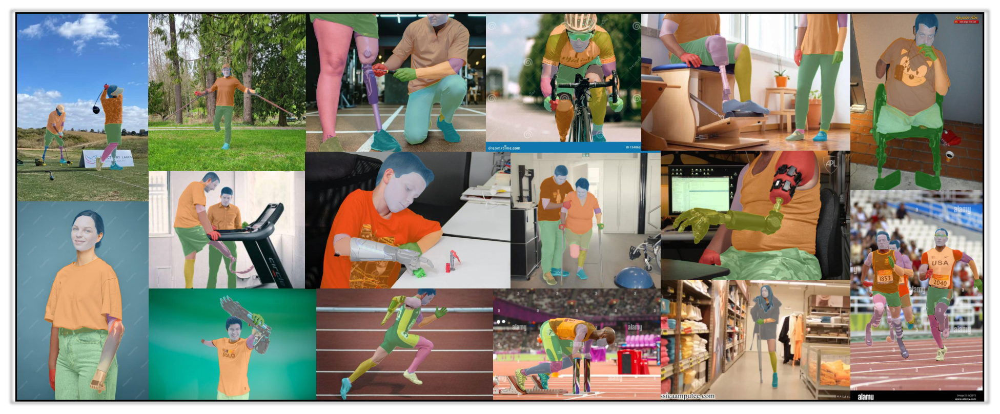
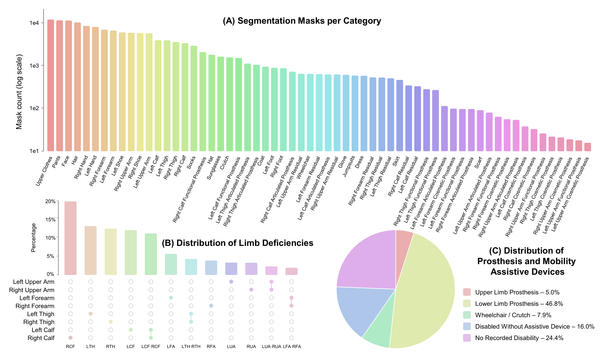
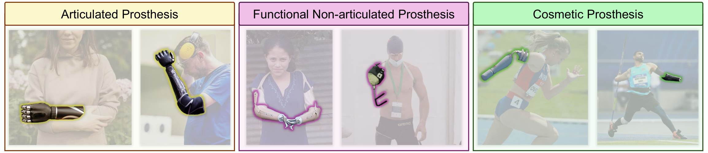
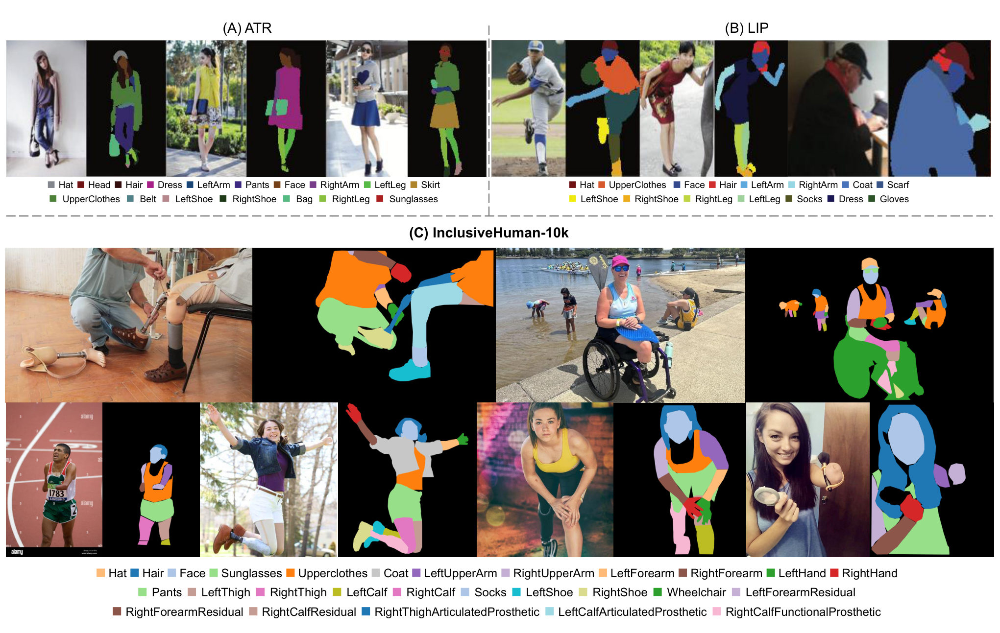
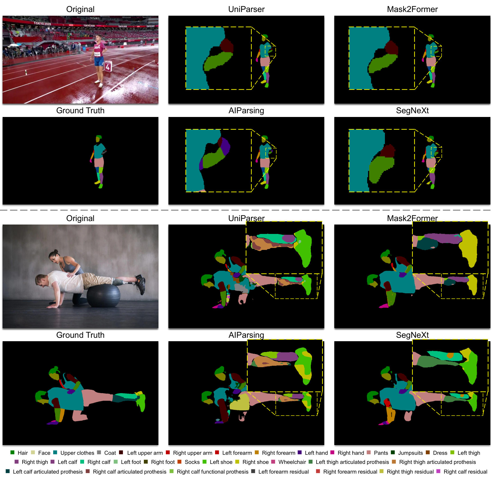

Towards Inclusive Human Parsing Beyond the Intact‑Limb Assumption

Human body parsing datasets and benchmarks define part labels for intact anatomies and focus on body parts and clothing. Widely used datasets implicitly assume intact anatomies and therefore do not include residual-limb or prosthetic classes, leaving people with limb deficiencies excluded from model training and standard evaluation — a fairness gap. We present InclusiveHuman‑10K (IH‑10K), to the best of our knowledge the first large-scale body parsing dataset centered on individuals with limb deficiencies, thereby enabling inclusive body parsing for the first time. IH‑10K contains more than 10k images and around 15k person instances from everyday, sports, and clinical scenes, each with pixel-wise body parsing masks. We extend conventional body parsing categories with explicit classes for residual limbs, prostheses, and mobility assistive devices, so these regions are named and measured rather than treated as background or noise. To assess whether disability-related regions are systematically underserved, we report group-wise metrics across disability-related and common classes. Our experiments show that supervised models struggle on these regions due to large appearance variation and broken limb structure, while zero-shot methods perform poorly — suggesting these concepts are absent from previous benchmarks and under-covered in open-vocabulary pretraining. We hope this work helps build vision systems that serve people with limb deficiencies more reliably and fairly.
Existing benchmarks (LIP, CIHP, MHP v2) implicitly assume intact anatomies. Without explicit labels, disability-related regions are absorbed into “background” — hiding failures and preventing targeted improvement.

A large-scale body parsing dataset centered on individuals with limb deficiencies, with pixel-wise labels for residual limbs, prosthetic components, and mobility assistive devices.
Subgroup-resolved evaluation over Common and Disability-Related classes, plus boundary-sensitive metrics, making disparities explicit and comparable.
We benchmark strong supervised and zero-shot methods, revealing large and consistent errors on disability-related regions and setting clear targets for future work.
Public images sourced from Flickr and Google showing residual limbs, prostheses, or mobility aids across everyday, sports, and clinical scenes — each person annotated with a pixel-wise parsing mask under a rigorous multi-stage review protocol.


We follow common human parsing label sets and add disability-related parts so these regions are named and measured rather than merged into the background.
Four segments per body side — upper arm and forearm for the upper limb, thigh and lower leg for the lower limb — with left and right annotated separately, yielding eight segment labels with clear stump boundaries.
Following clinical guidance, prostheses are grouped by structural complexity into three levels.

IH‑10K is the first human parsing benchmark that labels residual limbs, prosthesis components, and mobility aids — and the first to support subgroup evaluation over common vs disability-related classes.
| Dataset | #Images / Frames | People / sample | Residual limb | Prosthesis parts | Mobility aids | Subgroup eval |
|---|---|---|---|---|---|---|
| PASCAL-Person-Part | 3,533 | 2.2 | ✗ | ✗ | ✗ | ✗ |
| ATR | 17,700 | 1.0 | ✗ | ✗ | ✗ | ✗ |
| LIP | 50,462 | 1.0 | ✗ | ✗ | ✗ | ✗ |
| CIHP | 38,280 | 3.4 | ✗ | ✗ | ✗ | ✗ |
| MHP v2 | 25,403 | 3.0 | ✗ | ✗ | ✗ | ✗ |
| VIP | 21,247 | 2.9 | ✗ | ✗ | ✗ | ✗ |
| InclusiveHuman-10K (Ours) | 10,555 | 1.4 | ✓ | ✓ | ✓ | ✓ |

We evaluate fine-tuned parsing, fine-tuned segmentation, and zero-shot segmentation. Across every method, performance on Disability-Related classes lags far behind Common classes. Each cell shows All with the Common / Disability breakdown.
| Method | Backbone | mIoU | APp50 | PCP |
|---|---|---|---|---|
| AIParsing | ResNet50 | 30.97 46.34/17.51 | 31.70 46.51/6.93 | 35.92 48.06/18.81 |
| AIParsing | ResNet101 | 31.49 50.78/15.60 | 46.77 59.73/13.37 | 48.81 58.85/29.62 |
| UniParser | ResNet50 | 39.06 56.55/25.18 | 43.08 65.07/25.62 | 44.66 65.16/28.38 |
| UniParser | ResNet101 | 41.43 58.10/28.19 | 45.67 67.77/28.11 | 47.11 66.76/31.50 |
| Method | Backbone | mIoU (All) | Common | Disability | BIoU (All) |
|---|---|---|---|---|---|
| FCN | ResNet101 | 21.14 | 35.32 | 9.47 | 12.82 |
| SegFormer | MIT-B4 | 25.56 | 40.66 | 12.76 | 14.87 |
| Mask2Former | Swin-L | 28.07 | 45.05 | 14.09 | 19.41 |
| SegNeXt | MSCAN-L | 28.19 | 45.01 | 14.34 | 17.78 |
| Method | Prompt | mIoU (All) | Common | Disability |
|---|---|---|---|---|
| Grounded-SAM (Huge) | Text | 6.10 | 11.56 | 1.77 |
| CLIPSeg | Text | 2.68 | 5.81 | 0.19 |
| X-Decoder (Focal-L) | Text | 1.04 | 1.37 | 0.79 |
| SAM2 (Base) | Box | 75.84 | 71.25 | 79.48 |
| SAM (Huge) | Box | 75.55 | 73.38 | 77.26 |

IH‑10K is released for non-commercial research only. Access requires an approved request, in line with our institutional Human Research Ethics approval and the licenses of the source images.
ℹ️ Opening the Drive link before approval will show a request-access prompt — you must email first. IH‑10K must not be used for biometric identification (face recognition / re-identification) or for medical diagnosis or clinical decision making.
If you find IH‑10K useful, please consider citing our work.
@inproceedings{du2026inclusivehuman,
title = {InclusiveHuman-10K: Towards Inclusive Human Parsing
Beyond the Intact-Limb Assumption},
author = {Du, Heming and Ying, Jiaying and Cao, Xiaofeng and
Li, Zhu and Liu, Yuanyuan and Zhang, Kaihao and
Chen, Xin and Yu, Xin},
booktitle = {European Conference on Computer Vision (ECCV)},
year = {2026}
}